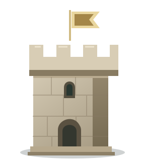
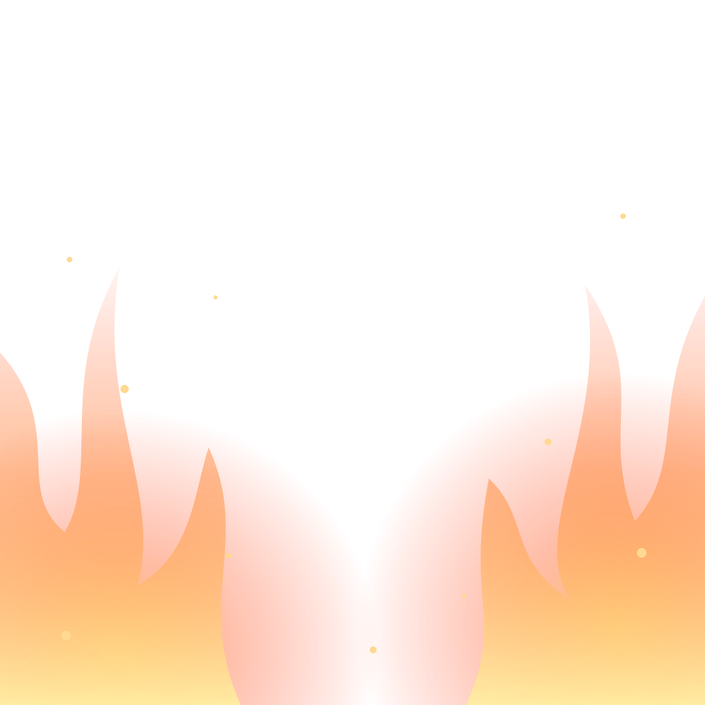

Lite mer magi i varje kort.
Sex genomskinliga lager att lägga över en kortbild. Välj ett uttryck och prova på tornet eller på en egen bild.


FÖRHANDSVISNING
85 %Eldglöd
Bilden stannar i din webbläsare. Inget laddas upp.
Eld, is eller mörk magi?
Eldglöd
Varma lågor och gnistor längs kanterna.
Hämta genomskinligt lager (SVG) ↓
1024 × 1024 · skalbar bild · transparent bakgrund
Hämtar bara effektlagret, utan tornet. Rörelse och effektstyrka gäller förhandsvisningen.